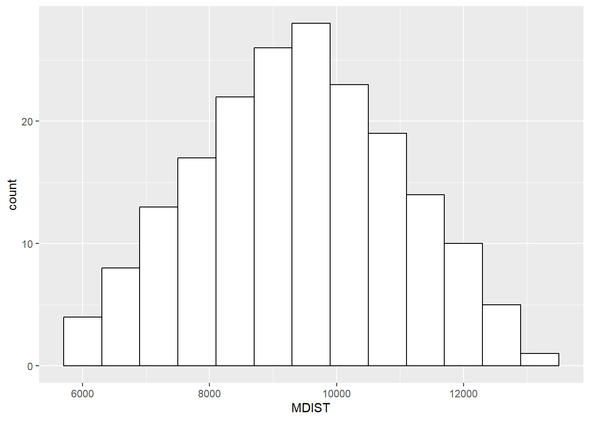

Chapter 7 Introduction to Statistics
Here, we begin to apply our probability concepts to statistics.
7.1 The Law of Large Numbers
Demonstration by repeating the coin-flip simulation
Remember, this is another random process, so results will differ each time slightly
## Heads Trial Cum_Heads Pct_Heads
## 1 0 1 0 0.0000000
## 2 0 2 0 0.0000000
## 3 1 3 1 0.3333333
## 4 0 4 1 0.2500000
## 5 1 5 2 0.4000000
## 6 0 6 2 0.33333337.2 The Distribution of Sample Means, and the Central Limit Theorem
First, let’s read in the data set.
## # A tibble: 6 × 2
## Person Income
## <chr> <dbl>
## 1 A 5600
## 2 B 6000
## 3 C 6400
## 4 D 6800
## 5 E 7200
## 6 F 7600## Min. 1st Qu. Median Mean 3rd Qu. Max.
## 5600 7500 9400 9400 11300 13200Let’s plot the distribution, and if we do so we will find that it is essentially uniform - every value occurs once in the population.

Now, what I am going to do is take a sample of 2 from that population, and take the mean
I do this using a ‘combination’ operation
## [1] "One Random Combination of 2 of the 20 Income Values"## [,1] [,2]
## [1,] 5600 6000Let’s take the mean of that:
## X1 X2
## 1 5600 6000## X1 X2 MDIST
## 1 5600 6000 5800So, the mean is 5800 (yes, I know there must have been a more efficient way to do that. Answers on a postcard).
So, let’s do that for every possible combination of 2 values from this population.
Given there are n=20 values in the population, there are k=190 possible combinations of two values.
Note: This is not the same as bootstrapping - we are not sampling with replacement here. We are instead taking combinations. The thing to think about is that this is the equivalent of taking every single possible sample of 2 that you could take from this population.
Remember the ping-pong balls!
Let’s do it:
## [1] "Every Possible Combination of the 20 Income Values"## [,1] [,2]
## [1,] 5600 6000
## [2,] 5600 6400
## [3,] 5600 6800
## [4,] 5600 7200
## [5,] 5600 7600
## [6,] 5600 8000
## [7,] 5600 8400
## [8,] 5600 8800
## [9,] 5600 9200
## [10,] 5600 9600
## [11,] 5600 10000
## [12,] 5600 10400
## [13,] 5600 10800
## [14,] 5600 11200
## [15,] 5600 11600
## [16,] 5600 12000
## [17,] 5600 12400
## [18,] 5600 12800
## [19,] 5600 13200
## [20,] 6000 6400
## [21,] 6000 6800
## [22,] 6000 7200
## [23,] 6000 7600
## [24,] 6000 8000
## [25,] 6000 8400
## [26,] 6000 8800
## [27,] 6000 9200
## [28,] 6000 9600
## [29,] 6000 10000
## [30,] 6000 10400
## [31,] 6000 10800
## [32,] 6000 11200
## [33,] 6000 11600
## [34,] 6000 12000
## [35,] 6000 12400
## [36,] 6000 12800
## [37,] 6000 13200
## [38,] 6400 6800
## [39,] 6400 7200
## [40,] 6400 7600
## [41,] 6400 8000
## [42,] 6400 8400
## [43,] 6400 8800
## [44,] 6400 9200
## [45,] 6400 9600
## [46,] 6400 10000
## [47,] 6400 10400
## [48,] 6400 10800
## [49,] 6400 11200
## [50,] 6400 11600
## [51,] 6400 12000
## [52,] 6400 12400
## [53,] 6400 12800
## [54,] 6400 13200
## [55,] 6800 7200
## [56,] 6800 7600
## [57,] 6800 8000
## [58,] 6800 8400
## [59,] 6800 8800
## [60,] 6800 9200
## [61,] 6800 9600
## [62,] 6800 10000
## [63,] 6800 10400
## [64,] 6800 10800
## [65,] 6800 11200
## [66,] 6800 11600
## [67,] 6800 12000
## [68,] 6800 12400
## [69,] 6800 12800
## [70,] 6800 13200
## [71,] 7200 7600
## [72,] 7200 8000
## [73,] 7200 8400
## [74,] 7200 8800
## [75,] 7200 9200
## [76,] 7200 9600
## [77,] 7200 10000
## [78,] 7200 10400
## [79,] 7200 10800
## [80,] 7200 11200
## [81,] 7200 11600
## [82,] 7200 12000
## [83,] 7200 12400
## [84,] 7200 12800
## [85,] 7200 13200
## [86,] 7600 8000
## [87,] 7600 8400
## [88,] 7600 8800
## [89,] 7600 9200
## [90,] 7600 9600
## [91,] 7600 10000
## [92,] 7600 10400
## [93,] 7600 10800
## [94,] 7600 11200
## [95,] 7600 11600
## [96,] 7600 12000
## [97,] 7600 12400
## [98,] 7600 12800
## [99,] 7600 13200
## [100,] 8000 8400
## [101,] 8000 8800
## [102,] 8000 9200
## [103,] 8000 9600
## [104,] 8000 10000
## [105,] 8000 10400
## [106,] 8000 10800
## [107,] 8000 11200
## [108,] 8000 11600
## [109,] 8000 12000
## [110,] 8000 12400
## [111,] 8000 12800
## [112,] 8000 13200
## [113,] 8400 8800
## [114,] 8400 9200
## [115,] 8400 9600
## [116,] 8400 10000
## [117,] 8400 10400
## [118,] 8400 10800
## [119,] 8400 11200
## [120,] 8400 11600
## [121,] 8400 12000
## [122,] 8400 12400
## [123,] 8400 12800
## [124,] 8400 13200
## [125,] 8800 9200
## [126,] 8800 9600
## [127,] 8800 10000
## [128,] 8800 10400
## [129,] 8800 10800
## [130,] 8800 11200
## [131,] 8800 11600
## [132,] 8800 12000
## [133,] 8800 12400
## [134,] 8800 12800
## [135,] 8800 13200
## [136,] 9200 9600
## [137,] 9200 10000
## [138,] 9200 10400
## [139,] 9200 10800
## [140,] 9200 11200
## [141,] 9200 11600
## [142,] 9200 12000
## [143,] 9200 12400
## [144,] 9200 12800
## [145,] 9200 13200
## [146,] 9600 10000
## [147,] 9600 10400
## [148,] 9600 10800
## [149,] 9600 11200
## [150,] 9600 11600
## [151,] 9600 12000
## [152,] 9600 12400
## [153,] 9600 12800
## [154,] 9600 13200
## [155,] 10000 10400
## [156,] 10000 10800
## [157,] 10000 11200
## [158,] 10000 11600
## [159,] 10000 12000
## [160,] 10000 12400
## [161,] 10000 12800
## [162,] 10000 13200
## [163,] 10400 10800
## [164,] 10400 11200
## [165,] 10400 11600
## [166,] 10400 12000
## [167,] 10400 12400
## [168,] 10400 12800
## [169,] 10400 13200
## [170,] 10800 11200
## [171,] 10800 11600
## [172,] 10800 12000
## [173,] 10800 12400
## [174,] 10800 12800
## [175,] 10800 13200
## [176,] 11200 11600
## [177,] 11200 12000
## [178,] 11200 12400
## [179,] 11200 12800
## [180,] 11200 13200
## [181,] 11600 12000
## [182,] 11600 12400
## [183,] 11600 12800
## [184,] 11600 13200
## [185,] 12000 12400
## [186,] 12000 12800
## [187,] 12000 13200
## [188,] 12400 12800
## [189,] 12400 13200
## [190,] 12800 13200## [1] "Number of combinations without repetition"## [1] 190## X1 X2
## 1 5600 6000
## 2 5600 6400
## 3 5600 6800
## 4 5600 7200
## 5 5600 7600
## 6 5600 8000Let’s create the means again
## X1 X2 MDIST
## 1 5600 6000 5800
## 2 5600 6400 6000
## 3 5600 6800 6200
## 4 5600 7200 6400
## 5 5600 7600 6600
## 6 5600 8000 6800OK, so here is the kicker. Let’s plot a histogram of these means:

Well well well!
Even though the original population was a completely uniform distribution with a mean of 9400, the distribution of all of the sample means looks quite a lot like a gaussian / normal distribution!
Let’s overlay one on it as well to make the point…
Further, let’s take the mean of those means…
## Min. 1st Qu. Median Mean 3rd Qu. Max.
## 5800 8200 9400 9400 10600 13000Hello! It turns out, the mean of those means is the population mean!!!
This, in a demonstration, is the central limit theorem.
7.3 Rate of Change in Football Goals per Season
Here, I’m using data from https://www.footballhistory.org/league/premier-league-statistics.html
I hand-entered this into a spreadsheet, and calculated the additional stuff.
## # A tibble: 6 × 7
## Season Games Goals GPG SE Lower95CI Upper95CI
## <chr> <dbl> <dbl> <dbl> <dbl> <dbl> <dbl>
## 1 1995-96 380 988 2.6 31.4 926. 1050.
## 2 1996-97 380 970 2.55 31.1 909. 1031.
## 3 1997-98 380 1019 2.68 31.9 956. 1082.
## 4 1998-99 380 959 2.52 31.0 898. 1020.
## 5 1999-00 380 1060 2.79 32.6 996. 1124.
## 6 2000-01 380 992 2.61 31.5 930. 1054.You can see here I have calculated the standard errors from the yearly goal totals (which represent that year’s underlying rate of goal occurrence), then used that to calculate the 95% Confidence Interval limits
We can use these to create a nifty chart with the error bars…drawing from the code used by Spiegelhalter in his book for Figure 9.4 available on his github (linked in the code).
From this chart, and looking at the data itself, we can see that the 95% Intervals overlap, so it is hard to conclude that the underlying rate of goals has changed significantly year on year. Yes, even in the pandemic.
The closest we get in fact is between the 2008-2009 and 2009-10 season. Interestingly, this corresponds to when Man City were bought, and it is evident that the top teams scored a lot more that year.
This is a stringent test however, and the ONS suggest that you can also test the change by using a Z-test, which directly tests the hypothesis that the change is zero, using the assumption that the events are Poisson distributed (we agree) and also that when the number of events are large (generally over 20), we can use an approximation to the normal distribution.
The z-test is simply explained in the linked article from the BMJ: https://www.bmj.com/content/332/7552/1256
It links us nicely to the next lesson, because it is aiming to test a specific hypothesis that the difference is zero…
If you open the data file below, you can see I have calculated the z-test results for the difference between each season, year-on-year.
## # A tibble: 6 × 9
## Season Games Goals GPG SE Lower95CI Upper95CI Change Z
## <chr> <dbl> <dbl> <dbl> <dbl> <dbl> <dbl> <dbl> <dbl>
## 1 1995-96 380 988 2.6 31.4 926. 1050. NA NA
## 2 1996-97 380 970 2.55 31.1 909. 1031. -18 -0.407
## 3 1997-98 380 1019 2.68 31.9 956. 1082. 49 1.10
## 4 1998-99 380 959 2.52 31.0 898. 1020. -60 -1.35
## 5 1999-00 380 1060 2.79 32.6 996. 1124. 101 2.25
## 6 2000-01 380 992 2.61 31.5 930. 1054. -68 -1.50The ‘Z’ column is what we are interested in, and we are looking for a z-value greater than + or - 1.96 for a 95% test (analogous to the 95% intervals we’ve been dealing with so far).
A simple way to visualize this is to plot the z-values for each season, and include ‘control lines’ which represent the + or -1.96 z value, beyond which we consider there to be a significant difference

So, we can see that the 1999-2000 season, and the 2009-10 seasons exceed our z values, making them significantly different from the seasons before.
Of course, we could do z-tests for any combination of two seasons, if we had a good reason. You can see on the ONS website they do this for different years’ murder rates to make a point.